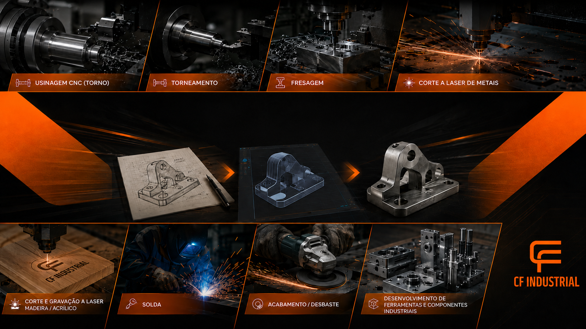
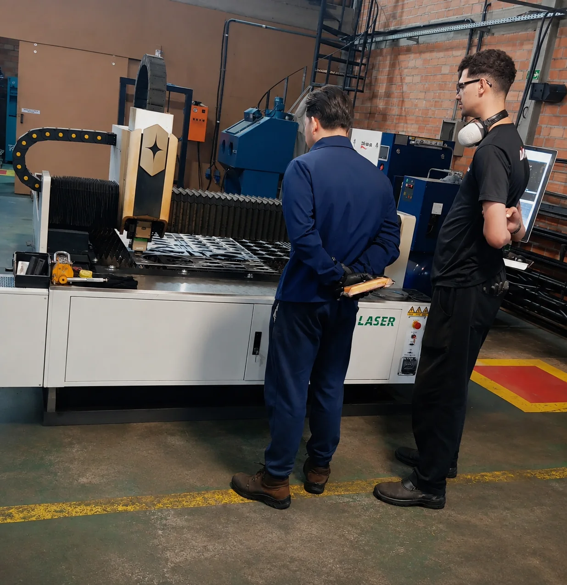

01
Corte a laser de metais
Corte de chapas e componentes metálicos para bases, suportes, flanges, painéis, peças e estruturas.
Ver serviço
Corte a laser, usinagem, fabricação, soldagem, impressão 3D, ferramentais e soluções sob medida para diferentes necessidades industriais.
Da peça simples ao dispositivo desenvolvido sob medida, a CF Industrial combina diferentes processos conforme a necessidade de cada projeto.
Corte de chapas e componentes metálicos para bases, suportes, flanges, painéis, peças e estruturas.
Ver serviçoCorte e gravação em MDF, madeira, acrílico e materiais compatíveis para projetos técnicos e comerciais.
Ver serviçoFabricação e recuperação de componentes conforme desenho, amostra ou necessidade de manutenção.
Ver serviçoProcessos para eixos, buchas, flanges, alojamentos, superfícies e componentes industriais.
ConhecerUnião, montagem, reforço e recuperação de componentes e conjuntos industriais.
Ver serviçoProtótipos, peças de apoio, gabaritos e componentes para desenvolvimento e validação.
Ver serviçoDesenvolvimento de ferramentas, gabaritos e dispositivos adaptados ao processo do cliente.
Ver serviçoFerramentas, máquinas, dispositivos, recuperação e soluções para profissionais de câmbio automático.
Conhecer soluçõesO objetivo é entender o que precisa ser resolvido, definir o processo adequado e transformar essa necessidade em uma solução fabricável.
Entendimento da necessidade e do uso final.
Definição de medidas, geometria e requisitos.
Escolha dos meios de fabricação adequados.
Execução conforme o escopo definido.
Peça, componente, dispositivo ou conjunto pronto.
Corte de chapas metálicas para peças de manutenção, componentes de máquinas, bases, suportes, flanges, painéis e projetos sob desenho.


Usinagem CNC, tornearia e fresagem podem ser aplicadas na fabricação de componentes novos, reposições e soluções destinadas à manutenção industrial.
Ferramentas especiais, dispositivos, máquinas, peças e serviços voltados a mecânicos, oficinas especializadas, reparadores e empresas que trabalham com câmbio automático.
Soluções para desmontagem, montagem, inspeção, recuperação e testes.
Aplicações para CVT, conversores de torque, corpos de válvulas e outras necessidades.

A empresa está localizada na Rua Doutor Murici, 7380 B, em São José dos Pinhais, com atendimento para Curitiba, Região Metropolitana, Paraná e demais regiões conforme o projeto.
Envie as informações do seu projeto e a CF Industrial avalia o processo mais adequado para sua necessidade.